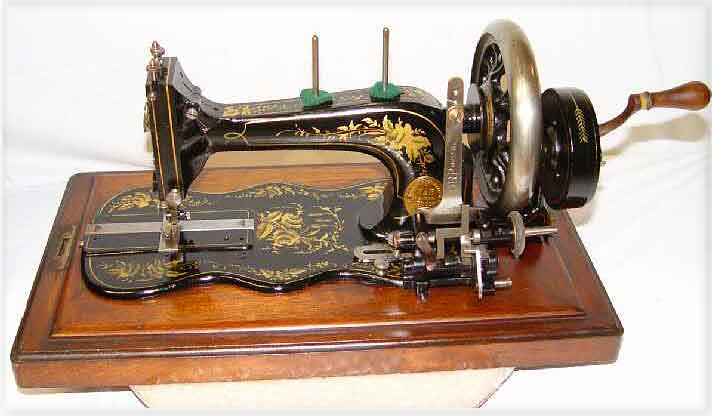
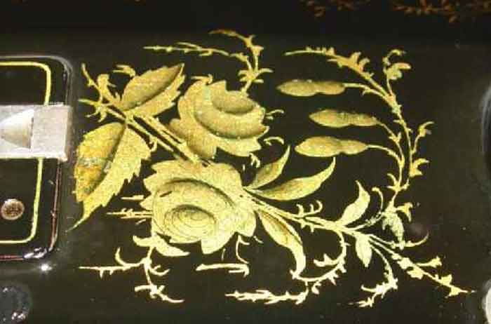
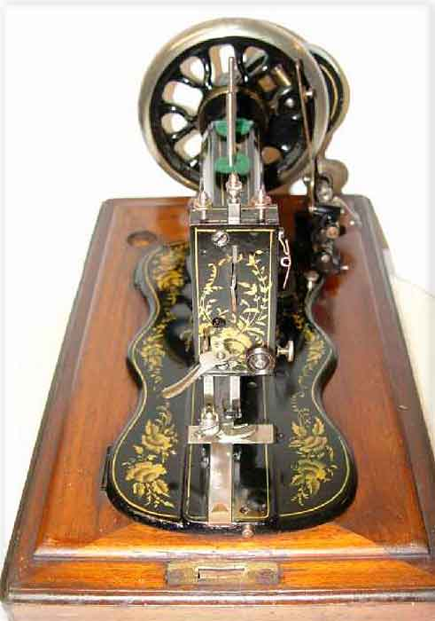

THE NEEDLEBAR
FRISTER & ROSSMANN
c.1884
Transverse Shuttle machine
Decal style -- Roses
Pictures courtesy of Gary Nelson
Front View

Bed Decal

Faceplate

© Jenny
Sims 2004. All Rights Reserved
This page may not be reproduced or distributed
in part or in whole without the prior written permission of the copyright
owner